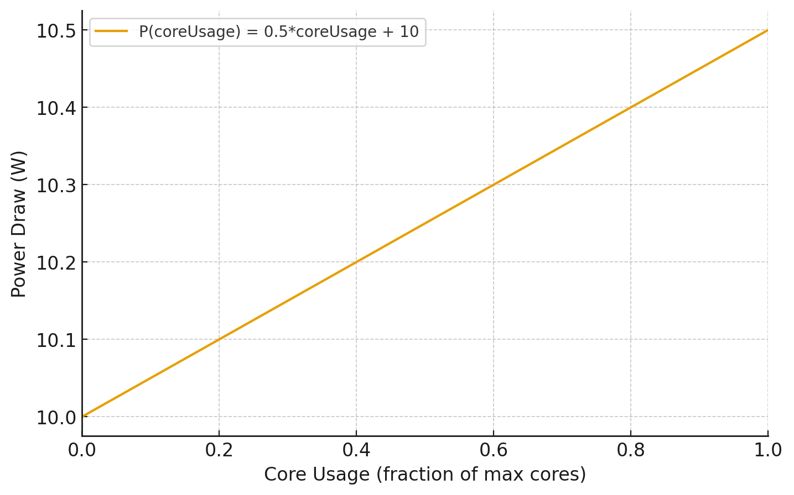

Parameters
The following parameters are currently available:
Output Files
-
traceFile
Name of the.txtcarbon footprint report containing the energy consumption, estimated CO₂ emission, and other relevant metrics for each task.
Default:co2footprint_trace_<timestamp>.txt -
summaryFile
Name of the.txtcarbon footprint summary file containing the total energy consumption and total estimated CO₂ emission of the pipeline run.
Default:co2footprint_summary_<timestamp>.txt -
reportFile
Name of the HTML report containing information about the entire carbon footprint, overview plots, and more detailed task-specific metrics.
Default:co2footprint_report_<timestamp>.html
Location & Carbon Intensity
-
location
Zone code of the geographical location of the computing machine. Find yourzone codeon the Electricity Maps zones overview. If the provided code does not match one of the defined, it will be set tonull, resulting in a fallback to the worldwide default value.
Default:null -
emApiKey
Your Electricity Maps API token.
Register in the developer portal, then create a Nextflow secret with the nameEM_API_KEYfor your API key using:
nextflow secrets set EM_API_KEY "paste_api_key_here". Then, set the config parameter tosecrets.EM_API_KEY.
Default:null -
ci
Location-based carbon intensity (CI). Set this parameter only if you know the CI for your location and prefer not to use the Electricity Maps API. However, using the API is recommended to retrieve real-time data for more accurate calculations.
Default:null -
ciMarket
This parameter can be added to account for individual differences in the energy mix that is used for computation. It is strongly recommended to read the Accounting for a personal energy mix section beforehand. This parameter does not replace the location-based CI, but adds another value to the final report.
Default:null
Data Center & Machine Settings
-
pue
Power usage effectiveness (PUE) of the data centre. For local cluster you can usually find out your specific PUE from the system administrators or system managers. Also, the current yearly worldwide average could be used. The plugin uses provider-specific default PUE values for supported cloud platforms if the respective executor is registered by Nextflow. You can find these values in the executor PUE mapping file.
If specified, this value will override any PUE determined bymachineType.
Default: 1.00 -
machineType
Type of machine used for computation. Determines thepueif not explicitly set.
Must be one of:'compute cluster','local', or'cloud'.
If not specified, inferred from Nextflowprocess.executor:'local': setspueto 1.0'compute cluster': setspueto 1.67'cloud': setspueto 1.56
Source: Uptime Institute 2024 Global Data Center Survey
Hardware Power Draw
-
powerdrawMem
Power draw from memory.
Default: 0.3725. -
customCpuTdpFile
Input CSV file containing custom CPU TDP data. This should contain the following columns:name,tdp (W),cores. Note that this overwrites TDP values for already provided CPU models. You can find the by default used TDP data here.
Default:null.name tdp (W) cores Intel(R) Xeon(R) CPU E5-2670 v3 120 12 AMD EPYC 7742 225 64 Intel(R) Core(TM) i7-9700K 95 8 File format
The table has to be supplied in .csv format.
-
ignoreCpuModel
Ignore the retrieved Nextflow tracecpu_modelname and use the default CPU power draw value. This is useful, if the cpu model information provided by the linux kernel is not correct, for example, in the case of VMs emulating a different CPU architecture.
Default:false. -
powerdrawCpuDefault
The default value used as the power draw from a computing core. This is only applied if the parameterignoreCpuModelis set or if the retrievedcpu_modelcould not be found in the given CPU TDP data.
Default: 12.0. -
cpuPowerModelExperimental feature
The
cpuPowerModelparameter is experimental and may change in future releases.Polynomial coefficients for a custom CPU power model (highest degree first).
If specified, this overrides TDP-based power draw estimation for CPU cores.
The coefficients should define a function that returns the per-core power draw (in Watts) as a function of core utilization (0–1).
Example:[0.5, 10.0]defines the model0.5 * coreUsage + 10.
Default:null.Example custom CPU power model:
